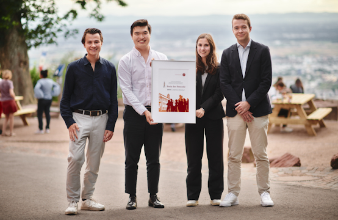

Since 1995 the Gesellschaft der Freunde has awarded the “Preis der Freunde”, worth €2,500, every year to student groups that have stood out with an exceptional initiative. The list of past winners stands for extraordinary student commitment.
Call for applications
Are you a student at Heidelberg University who has started a project or initiative that matters to other students, an institute, a subject, a faculty or student life beyond the curriculum? Then apply! The call runs every spring; for 2026 the deadline was 4 May 2026. Poster of the last call (2025): PDF
Winners 2025: Cheaper than therapy run club
The Cheaper than therapy run club is Heidelberg’s first social run club. Founded by four dentistry students, the initiative offers students a low-threshold, regular way to exercise and meet through weekly runs and further activities. With its focus on mental health, it draws attention to a topic that is often neglected in everyday university life.
Winner 2024: StudyTutors Heidelberg

With about 100 committed students, StudyTutors Heidelberg is part of a nationwide association that helps pupils from socially or financially disadvantaged backgrounds through free tutoring organised and delivered by students. The prize was presented on 12 July 2024 at the Tag der Freunde.
Winner 2022: “Situs Inversus – Der Vorklinik-Podcast”
Founded in summer 2020 by five human-medicine students as a volunteer project: a podcast in the style of a tutorial that explains the essential topics of pre-clinical medicine from a student perspective. The prize was presented on 21 July 2023.
Other winners since 1995
- MediNetz Rhein-Neckar
- Match4healthcare
- Chancen gestalten Heidelberg
- Querfeldein Heidelberg
- Heidelberger Lupe
- Weitblick Heidelberg
- ROCK YOUR LIFE! Heidelberg
- Pro Bono Heidelberg
- HCWK
- HIIK
- artefakt
- ikulE
- Interdisziplinäres Forum
- Delta – The Philosophers Club
- Forum für Kritische Theorie
- RadioAktiv
- StudzR
- Gärtnerei Wildwuchs
- Praktikumsinitiative Geografie
- Romanischer Keller
- Sozialhandbuch der Fachschaften
- ruprecht
- Nightline
- Anatomie am Lebenden
- Die Anstifter
- URRmEL
- Theatergruppe Anglistik
- Emsa Heidelberg